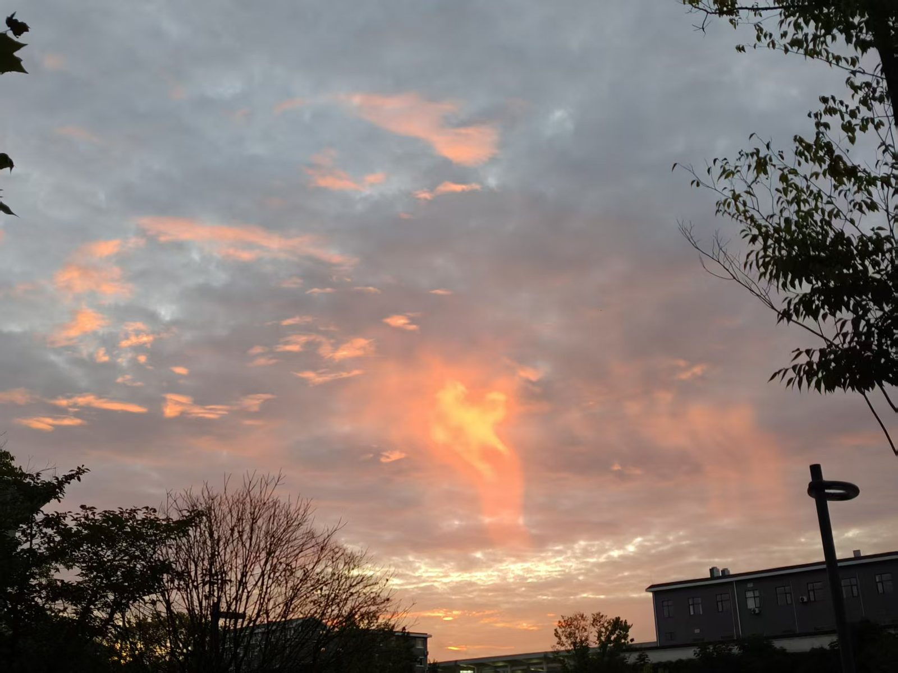

Essay · 2026 · 5 min read
Games worth bragging about.
Not a review — honest favorites and the moments that made them stick.
There is a particular type of game memory that has nothing to do with whether the game was good. It's the night, the room, the friend on the other end of the headset, the song that happened to be playing when the credits rolled. The games stay because the moments did.
This is a list, in no order, of the ones I keep going back to — and the small reason each one earned a permanent seat.
The short list
Outer Wilds. A puzzle game in the shape of a solar system. The first time the music swells at the campfire I had to put the controller down.
Stardew Valley. Played in winter, with the curtains shut, three cups of tea deep. Counts as both a video game and a kind of weather.
Disco Elysium. A book that occasionally lets you make decisions. Best read in two long sittings, no shortcuts.
Games age in the way photographs do — they don't really get older, you just see new things in them.
I'll add to this list as it gets longer. If you have one that belongs here, the inbox is open.
Draft notes: more entries coming — currently halfway through writing up Hades and Tunic.